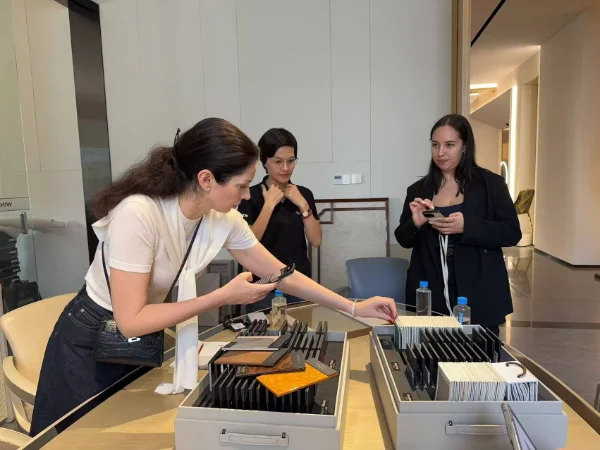
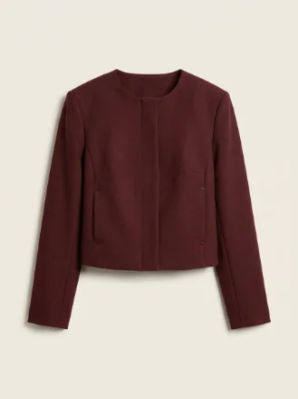
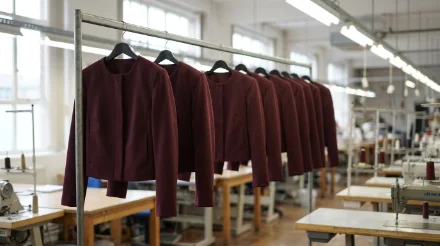
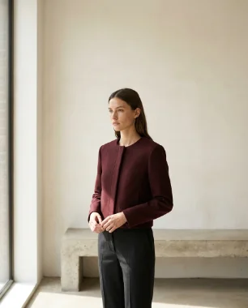
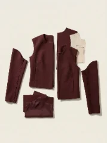
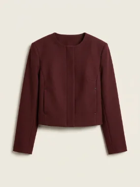

Чтобы понимать, что происходит с партией, приходится постоянно писать, звонить, запрашивать фото и надеяться, что проблема не обнаружится слишком поздно.
→ Команда находится в Китае и контролирует производство на месте.

Эталонный образец устроил, но во время серийного производства могут поменяться материал, посадка, фурнитура или обработка.
→ Контроль идёт в процессе производства, а не только после того, как партия уже готова.


Лекала, материалы, образцы, корректировки, производство — и на каждом этапе можно ошибиться.
→ Команда ведёт продукт через весь производственный цикл: от идеи до партии.



Можно произвести прекрасную вещь, которая окажется бессмысленной для бизнеса из-за себестоимости.
Фабрика, технолог, закупщик, контроль, переговоры — всё это ещё нужно связать между собой и заставить работать на один результат.